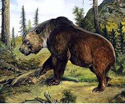

Extinction
The decline of the Atlas bear can be partly attributed to the Roman Empire, in that, as the empire expanded into Northern Africa, the Romans intensely hunted and captured the Atlas bear and many other animals and used them as sport for many of their games. This went on for centuries, during which time thousands of bears had been used in the arenas to fight in games against gladiators, lions, tigers and other animals. They were cruelly treated, often starved and malnourished to increase their desperation and hence their aggression within the arena.[6] Thousands of these bears were also hunted for sport, venatio games, or execution of criminals via ad bestias.[7] During modern times, firearms prior to about 1850 were inadequate to bring down the brown bear.[8] The Atlas bear became extinct shortly after modern firearms were developed. Over-hunting may have contributed to their decline. And finally pressure from zoo collectors sealed the fate for the Atlas bear, with the animals being taken away from one another and unable to reproduce and flourish. The Atlas bear finally became extinct in the late 19th century; the last one recorded to be killed by hunters was in 1870 in the Tetouan Mountains in northern Morocco.[9] Human activity can definitely be said to have played a large role in pushing the extinction of the Atlas bear.[10]
Range and description
The Atlas bear was Africa's only native bear that survived into modern times. Once inhabiting the Atlas Mountains and neighbouring areas, from Morocco to Libya, the animal is now thought to be extinct.[2] The Atlas bear was brownish black in colour, and lacked a white mark on the muzzle. The fur on the underparts was reddish orange. The fur was 4–5 inches (100–130 mm) long. The muzzle and claws were shorter than those of the American black bear, though it was stouter and thicker in body. The Atlas bear was said to have been 9 feet long and weighed 1,000 pounds (450 kg).[3] It apparently fed on roots, acorns and nuts.[4] The Atlas bear was said to have been mostly herbivorous, but since most bears today are omnivores, the atlas bear is believed to have been able to eat meat as well.[3]